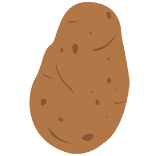
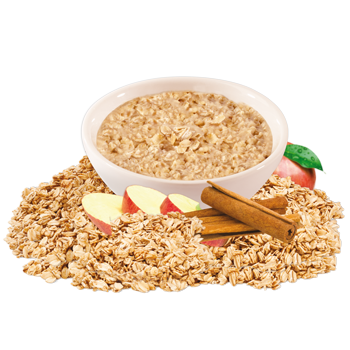
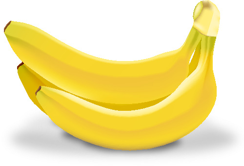
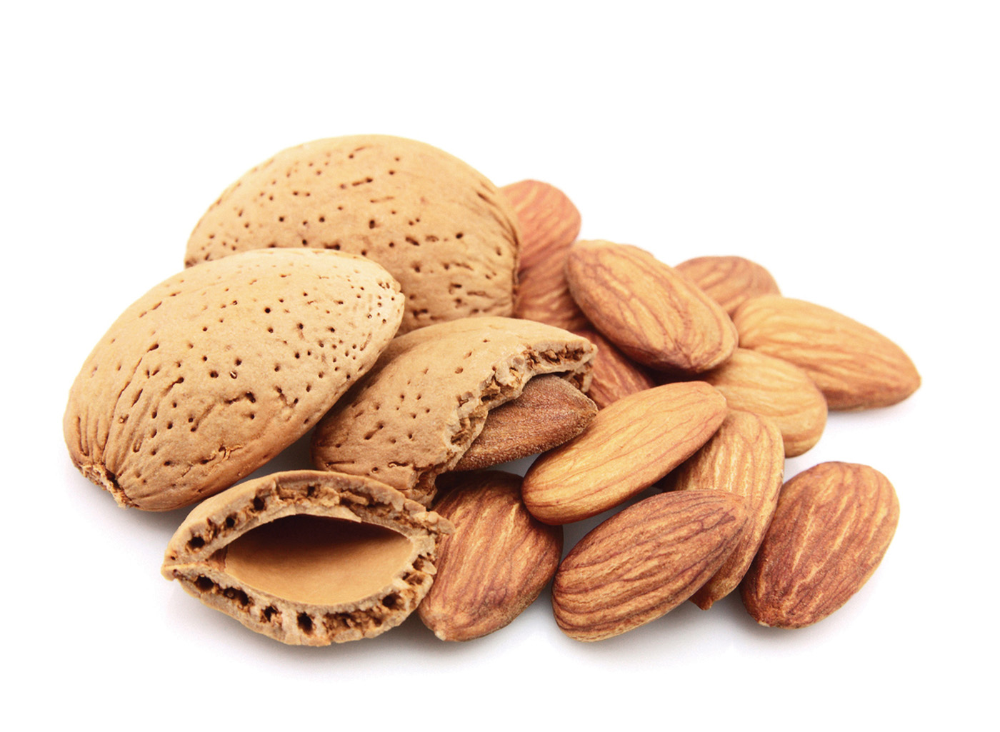

Rice
summary: The health benefits of rice include its ability to provide fast and instant energy, regulate and improve bowel movements, stabilize blood levels, and slow down the aging process, while also providing an essential source of to the human body.

Potatoes
summary: Potatoes as a very good source of vitamin B6 and a good source of potassium, copper, vitamin C, manganese, phosphorus, niacin, dietary fiber, and pantothenic acid.

Oatmeal
summary: Nutritional breakdown of oats. Dietary fiber - oats are rich in a specific type of fiber called beta-glucan. This particular type of fiber is known to help lower levels of bad cholesterol. One cup (81g) of dry oats contains 8.2 grams of fiber1, the recommended daily intake of fiber is 25g for women and 38g for men. [Click for full info]
Yams
summary: Yams are made up of complex carbohydrates and dietary fiber allowing for slow uptake to keep blood sugar levels even, giving it the nod as a low glycemic index food.

Banana
summary: Bananas contain a number of vitamins and minerals in decent amounts. These include potassium, vitamin B6, and vitamin C.
Watermelon
summary: One of the natural chemicals in watermelons is citrulline, which converts in the kidneys to arginine, an amino acid that works hard for heart health and maintaining a good immune system. The more this conversion takes place, the less fat is apt to accumulate in the cells, helping to keep obesity and type 2 diabetes from becoming issues. Arginine also removes ammonia and other toxicities from your body.
Kale
summary: If vitamins could be packaged and labeled as such, they would look very much like kale. That’s because the vitamins offered by just one cup of this relatively little-known veggie can trump a whole week’s worth of other foods: 684% of the daily value of vitamin K, 206% of the suggested daily amount of vitamin A, and 134% of vitamin C (and even more vitamin C in the Scottish curly-leaf variety).
Coconut
summary: They're loaded with naturally sterile electrolytes, which feed your pH and muscle function

Almonds
summary: They are an excellent source of magnesium, vitamin E, fiber, unsaturated fats and many other nutrients. Almonds may also promote weight loss and help reduce belly fat. Additionally, they have been shown to strengthen the immune system and help improve heart and digestive health.

Fish
summary: all types of fish are good for you. They are high in many nutrients that most people aren’t getting enough of. This includes high-quality protein, iodine and various vitamins and minerals. However, some fish are better than others, and the fatty types of fish are considered the healthiest. That’s because fatty fish (like salmon, trout, sardines, tuna and mackerel) are higher in fat-based nutrients.
Chicken
summary: Protein
Protein Powder
summary: whey is a complete protein with a very high BV and this means it contains all the essential and nonessential amino acids and boasts the highest branched-chain amino acid content found in nature.
Multi-vitamin
summary: For the human body to complete all the tasks it has in a normal day, it must be given a wide and complex variety of vital nutrients. Becoming deficient in any one of these essential vitamins or minerals causes breakdown of the metabolic pathway that produces optimum efficiency and performance goes down quick.